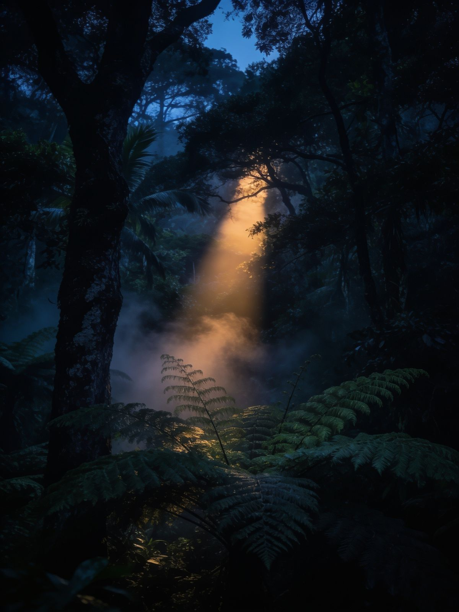

Where mission and lifestyle collide
Force of Nature is a movement built around a simple idea, 10% of every sale, not profit, goes toward reef, forest, and coastline conservation. No pledges, no opt-ins, the impact happens automatically the moment you wear it.
Follow the journeyFollow the journey
Welcome on board.
From first idea to first shirt, get the behind-the-scenes updates as we build Force of Nature from the ground up. No spam, ever.
01
First access
New drops and limited colourways before they hit the shop, plus early access to restocks.
02
Impact reports
Where the 10% actually goes, which reef, which forest, which coastline, and what changed because of it.
03
The story behind it
Founder notes from Mauritius, the people and places behind every shirt, not just marketing copy.
Where the 10% goes
Of every sale, not profit.



All aboard